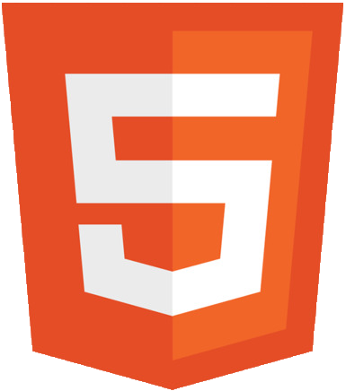
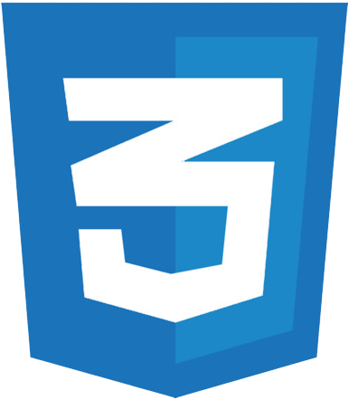

My name is Tristan Deering. I am a web development alumnus of Lighthouse Labs devoted to clean optimized code and user experiences. In my free time I enjoy learning new technologies emerging in the development space and freelancing as a versatile web developer skilled in SEO, accessability, responsive design, interactive design, front-end optimization techniques and UI/UX design.
Best Of 3
Final Project
 

Mocking Bird
Full-Stack Project

3rd Perspective Design
Client CMS Project


Dare Design
Client CMS Project
RSVP

About / Links
Index
Best Of 3
Mocking Bird
3rd Perspective Design
Dare Design
RSVP React